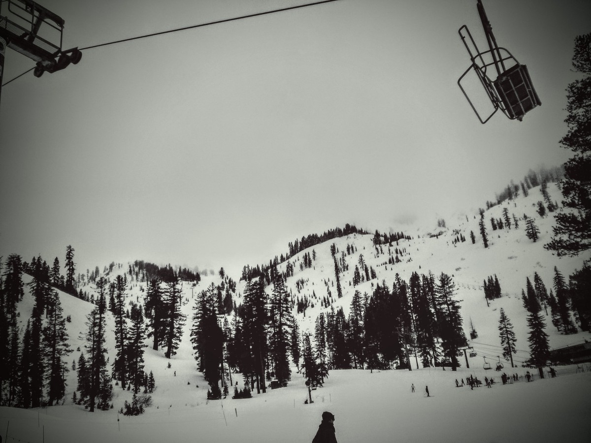
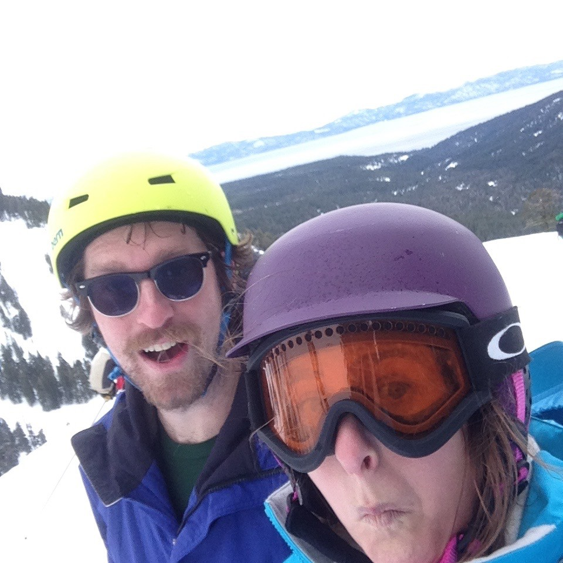
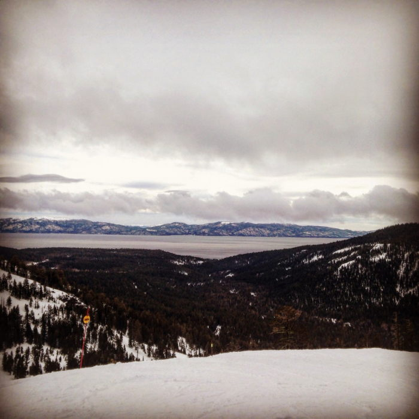
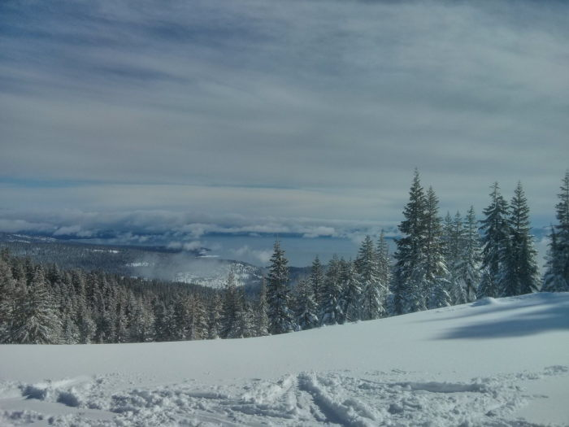
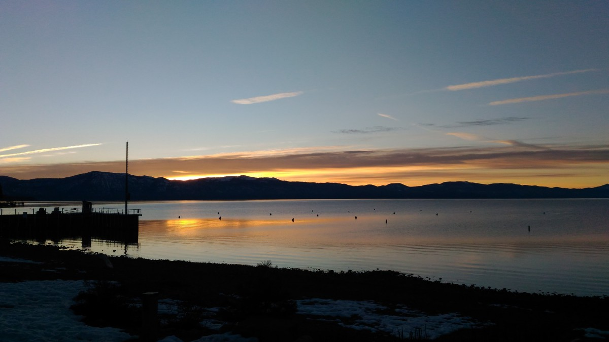
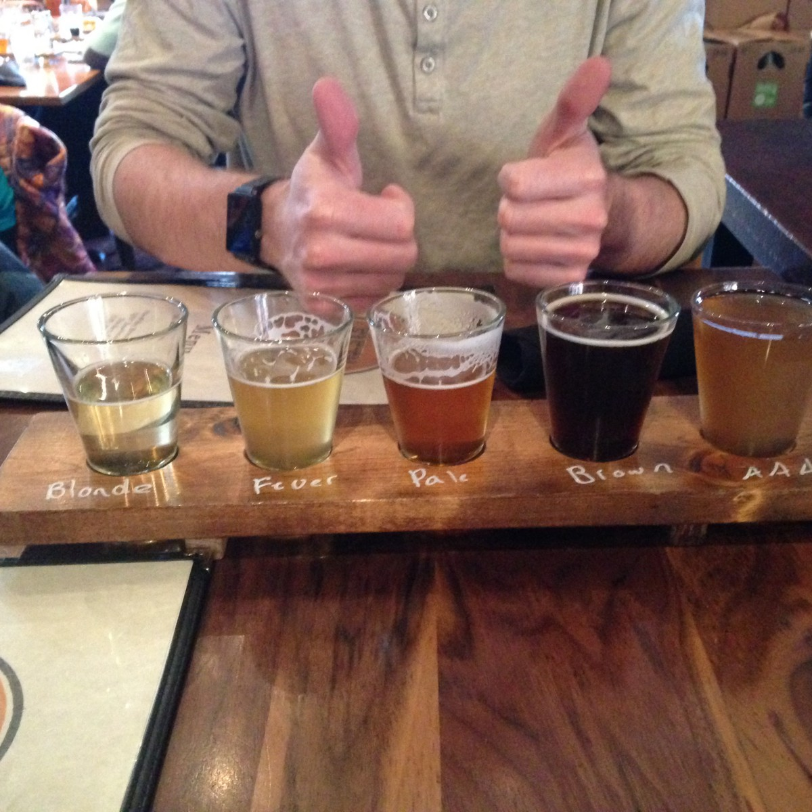
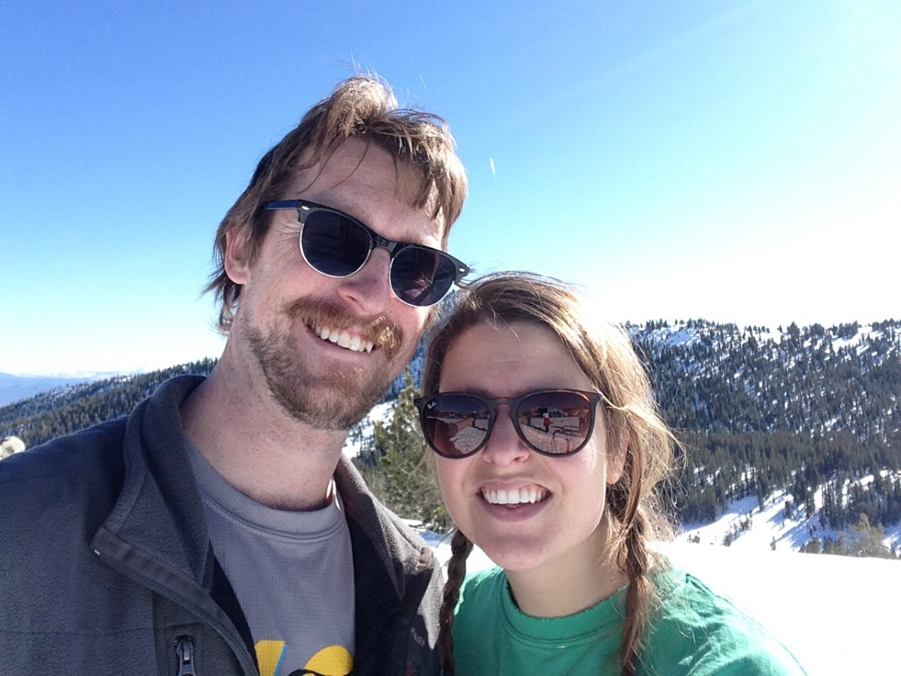

<div class="blurb">
	<h1 align="center">Tahoe Area Attractions</h1>


	<h2><span style="text-decoration: underline; strong;">Basics:</span></h2>
	<p>The wedding is in Norden, California. The nearest major town is Truckee, about 20 minutes away. The nearest part of the lake is North Lake. If you see something that says “South Lake,” it is about an hour and a half drive from Sugar Bowl Resort.</p>
<br>
<p>Drink water. More water than you think. The wedding and events are <strong>at altitude (6,668 feet and up)</strong>, which means you will easily get dehydrated and also out of breath. So wherever you go, and whatever you do, <strong>DRINK WATER.</strong></p>


<h2><span style="text-decoration: underline; strong;">Historic Downtown Truckee:</span></h2>
<p>Experience <a href="http://www.historictruckee.com/">downtown Truckee's</a> old-west mountain charm with unique shops, luxurious hotels, great restaurants, wine tasting, art galleries & entertainment.</p>

<br>
<h2><span style="text-decoration: underline; strong;">Donner Memorial State Park and Emigrant Trail Museum:</span></h2>
<p>Yep, THAT <a href="https://www.youtube.com/watch?v=3I-D8Ozc4Oc">Donner party</a>. Also apparently has some nice walks around the <a href="http://www.parks.ca.gov/?page_id=503museum"</a>.</p>

<h2><span style="text-decoration: underline; strong;">Golfing/Fishing:</span></h2>
<p>Apparently you can do that. Here is some information on <a href="http://www.villageatsugarbowl.com/village/summer.cfm">golfing</a>, and here is some on <a href="http://www.arounddonnersummit.com/activities/fishing.html">fishing.</a></p>

<br>
<h2><span style="text-decoration: underline; strong;">Hiking:</span></h2>
<p>There are some epic hikes around Sugar Bowl. Below are just a few, and we recommend looking into more on your own. A thing to note: All of these trails <strong>are at altitude.</strong> You should find that basic tasks, like walking, become more difficult at altitude. People who normally perform these hikes <strong>are adjusted. YOU ARE NOT.</strong> Please listen to the classification we give to the hikes, and not what websites might say.</p>
<br>
<p><strong>Please Bring MORE WATER than you think you will need, and wear sunscreen!</strong> You are at altitude, and will need to drink more water than normal. Also, sunburns are painful</p>
<br>
<h1><span style="text-decoration: underline;">Difficult</span></h1>
<p>Mt. Judah Loop (roughly 5.5 miles, 1,150 ft elevation gain): Excellent vista points on the way including awe-inspiring views from the summit of Mt. Judah. There is a section of the loop that connects with the Pacific Crest Trail. Pack plenty of water. (Please use both websites so you do not get lost). <a href="https://www.trailrunproject.com/trail/7020317/mt-judah-loop">Here.</a>and <a href="http://onthesummit.net/wordpress/activities/trails/donnerjudah-peaks/">Here</a></p>
<br>
<h1><span style="text-decoration: underline;">Medium/Difficult</span></h1>
<p>Donner Peak Trail. It is like Mt. Judah, but shorter. (roughly 3.7 miles, 886 ft elevation gain). <a href="http://onthesummit.net/wordpress/activities/trails/donnerjudah-peaks/">Here</a> and <a href="https://www.alltrails.com/trail/us/california/donner-peak-trail"Here</a></p>
<br>
<h1><span style="text-decoration: underline;">Easy</span></h1>
<p>For when you want a view without the effort. <a href="https://www.alltrails.com/trail/us/california/omega-mine-overlook">Here</a></p>
<br>

<h2><span style="text-decoration: underline; strong;">Lake Tahoe:</span></h2>
<p>Go check out the Lake! There are a million and one things to do here, but we humbly recommend <a href="http://www.visittahoecity.org/">Tahoe City</a> (great to stroll downtown and get some Lake Views), <a href="http://www.10best.com/destinations/nevada/tahoe/attractions/things-to-do-at-kings-beach/">King’s Beach</a>, <a href="https://www.parks.ca.gov/?page_id=506">Emerald Bay</a> for some hiking, and maybe even a <a href="http://www.wildgoose2.com/cruise--charter-info.html">boat cruise.</a></p>
<br>
<h2><span style="text-decoration: underline; strong;">Check out Squaw Valley And Northstar:</span></h2>
<p>Yes yes, these are ski resorts, but they both have gondolas to take you to the peak in the summer. See views without the hard work!</p>
<br>
<p>Northstar also has some pretty legendary <a href="http://mtbparks.com/California/209-Northstar-at-Tahoe/View-details.html">mountain biking.</a></p>
<br>
<p>Find a bit more background <a href="http://www.mercurynews.com/2016/07/01/four-ways-to-play-at-tahoe-this-summer/">here.</a></p>
<br>
<br>
<h2><span style="text-decoration: underline; strong;">Breweries:</span></h2>
<p>Reward yourself after a day of hiking, swimming, skiing, or just existing.</p>
<a href="http://fiftyfiftybrewing.com/">Fifty-Fifty Brewing</a>
<a href="http://tahoebrewing.com/">Tahoe Brewing</a>
<a href="https://www.moonrakerbrewing.com/">Moonraker Brewing Co.</a>
<br>
<br>
<h2><span style="text-decoration: underline; strong;">Gambling:</span></h2>
<p>If nature is not your thing, there are Casinos over the border in Nevada. Casinos near Crystal Bay will be closest to the venue. There are bigger ones in South Lake and Reno.</p>
<br>


 <div align="center">
		  </div>


  <p align="center">What can you do in Tahoe?!?</p>
  <p align="center"><strong>A LOT</strong></p>

 <div align="center">
		  </div>
	<p align="center">You can ski.  (Might have a harder time with this during the summer)</p>

  <div align="center">
		  </div>
	<p align="center">You can look at views</p>

   <div align="center">
		  </div>
	<p align="center">Or other views</p>

	<div align="center">
		  </div>

	<p align="center">Wake up early and enjoy more views</p>

	<div align="center">
		  </div>
	<p align="center">Enjoy delicious beers to regain all the calories burned doing outdoor activities</p>

	<div align="center">
		  </div>
	<p align="center">Pose for sappy photos</p>
	<p align="center">And other stuff</p>

</div><!-- /.blurb -->
Contact GitHub API Training Shop Blog About
